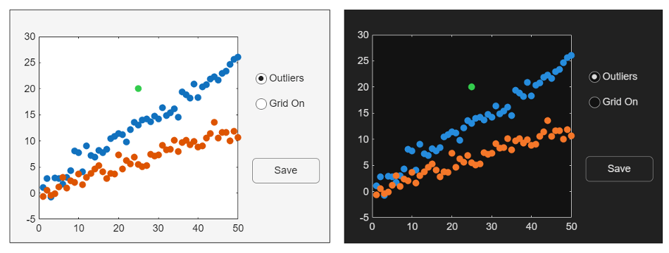
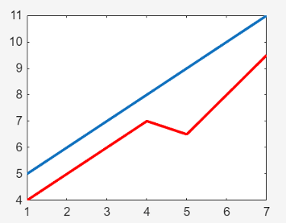
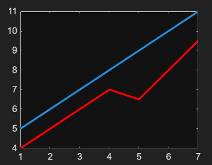

Graphics and App Themes
Use graphics themes to choose a light or dark overall look for figures and their contents, such as plots and apps. By default, the figure theme matches the theme of the MATLAB® desktop. However, you can control the theme for a specific figure or all figures in your session, separately from the MATLAB desktop. By understanding how MATLAB updates the colors of elements in a figure, you can design your plots and apps to ensure consistent results on systems with different theme configurations.
Setting the Figure Theme
By default, the MATLAB desktop uses the theme of your operating system, and figures use the desktop theme. So, if you configure your operating system to use a dark theme, MATLAB opens in a dark theme and your figures are dark. Use either of these methods to control the theme of an individual figure:
Call the
themefunction — Set the figure’s theme explicitly by calling thethemefunction. Alternatively, you can set theThemeproperty of theFigureobject directly. Use this approach to ensure that your code creates figures with a specific theme, regardless of the default theme.Select a theme in the Figure toolstrip — At the top of the figure, in the Format tab, open the Theme menu. Pause on any of the menu items to preview the figure using a particular theme. Select an item to apply the theme to the figure. Use this approach to interactively change the theme of a specific figure without writing code.
Alternatively, you can set the theme of all figures using the MATLAB Settings window. On the Home tab of the MATLAB Toolstrip, in the Environment section, click Settings and select MATLAB > Appearance. Then select an item from the Figure Theme menu. Your settings persist across MATLAB sessions. This approach is useful for configuring your working environment in MATLAB to suit your preferences.
Customize Colors of Objects in Themed Figures
By default, MATLAB sets the colors of UI components and graphics objects (such as
Line and Scatter) according to the value of the
figure’s Theme property. If the Theme property
changes, the colors of the objects in the figure update automatically to preserve their
visibility.
You can override this automatic behavior for a specific object by setting a color
property of that object. You can set most color properties by specifying an RGB triplet,
hexadecimal color code, or a color name. In some cases, you can specify the color as an
input argument to the function that creates the object. For example, you can specify the
color of a line plot when you call the plot function, or you can
specify the Color property of the Line
object.
% Specify the color using a function argument p = plot([0 4 1 7 3 9],"-red"); % Set the Color property to an RGB triplet p.Color = [0.2 0.8 0.3];
If you specify an object’s color value explicitly, MATLAB does not update the color value if the theme changes. Instead, it preserves that value regardless of the theme. For example, the following image shows an app that uses the default color values for all the objects in the figure except for the green marker in the plot, which is explicitly set. Notice that the (default) blue- and orange-colored markers in the dark-themed figure have a similar hue to the markers in the light-themed figure, but they are slightly brighter. Also, the colors of the text and axes lines are different for each theme. These changes help to maintain consistency and preserve visibility. By contrast, the color value for the green marker is the same in both figures because that color was explicitly set.

MATLAB uses mode properties to identify the property values to update when conditions
(such as the theme) change. You can access the mode properties for many (but not all)
objects. Mode properties are paired with specific properties of an object, and their names
end with the word "Mode". For example, Line objects
have a Color property and a ColorMode property. If
the ColorMode property has a value of "auto" (the
default value), MATLAB updates the Color property when the theme changes. If the
ColorMode property has a value of "manual", the
Color property is preserved regardless of the theme. MATLAB changes the ColorMode property from
"auto" to "manual" when you specify the color using
a function argument or the Color property.
For example, create a light-themed figure, and plot two lines, p1 and
p2. Create p1 using the default color, and change
the color value of p2 to [1 0 0] (red) by setting the
Color property.
f = figure(Theme="light"); p1 = plot(5:11,LineWidth=2); hold on p2 = plot([4 5 6 7 6.5 8 9.5],LineWidth=2); p2.Color = [1 0 0];

Display the Color and ColorMode properties of
p1.
p1_lightcolor = p1.Color p1_colormode = p1.ColorMode
p1_lightcolor =
0.0660 0.4430 0.7450
p1_colormode =
'auto'Display the Color and ColorMode properties of
p2.
p2_lightcolor = p2.Color p2_colormode = p2.ColorMode
p2_lightcolor =
1 0 0
p2_colormode =
'manual'Change the theme to "dark".
theme(f,"dark")
Display the Color properties again. The color value of
p1 changed when the theme changed, but the color value of
p2 did not change.
p1_darkcolor = p1.Color p2_darkcolor = p2.Color
p1_darkcolor =
0.1490 0.5490 0.8660
p2_darkcolor =
1 0 0Updating Code from Previous Releases
If you wrote code that specified color values before themes were introduced, those
colors might not be as visible in the dark theme due to the change in the background color.
To preserve the visibility of your plot or app regardless of the system running your code,
set your preferred theme of the figure using the theme function
or the Theme property
of the figure. When you set the theme explicitly, the figure and its contents are not
affected by the theme of the operating system, the MATLAB desktop, or the theme of other figures in the MATLAB session.
If you want to create graphics and apps with custom colors that update according to the theme, you can use different strategies to ensure consistent, readable results in different themes. For more information, see Design Graphics and Apps for Different Themes.